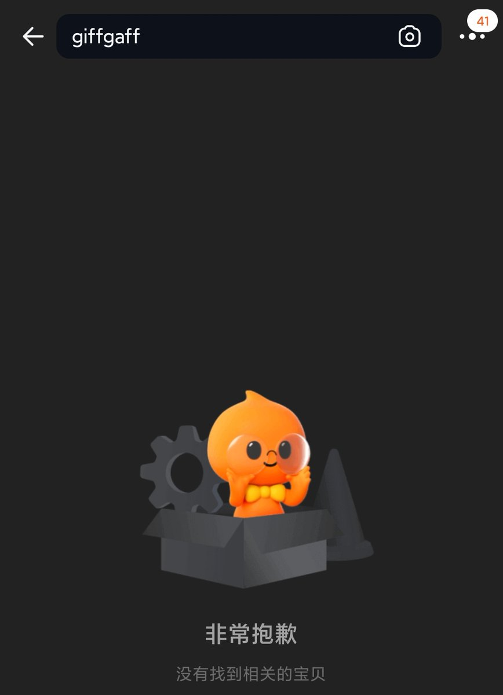
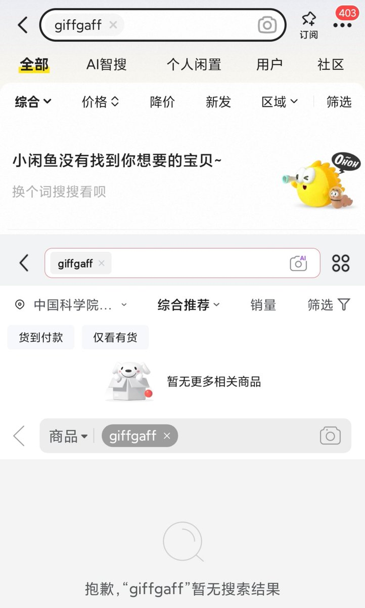

奶昔🥤
@realNyarime
疑似监管打击境外电话卡，现在中国电商平台（淘宝、闲鱼、京东、拼多多）已无法搜寻「giffgaff」英国保号神卡。
所有在国内售卖的境外旅游上网卡均打上「仅可境外激活，境内无法使用」的字样，结合国内eSIM设备的地理围栏，应该暂不影响出境旅游人士的用卡需求。毕竟可以出境后，前往对应境外运营商门店购买当地电话卡，并不受内地有关部门监管。
猜测下一步动作是像中国移动CMLink在香港和台湾地区要求预实名，用户需线上提供iccid以及实名信息（kyc）提交审核，待审核通过后才能在所在地正常使用，否则将无法接入当地基站。

